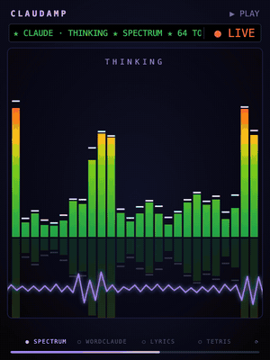
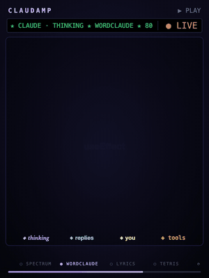
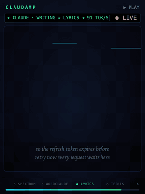
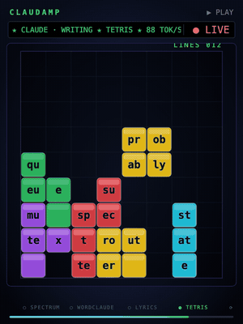
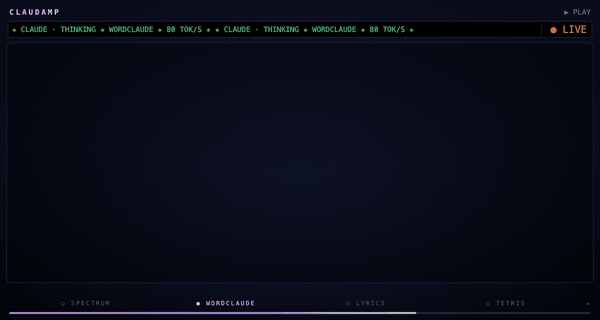

▮▮ Spectrum s
Real data: each bar is a slice of the last few seconds of the stream, as tall as what arrived in it. Bursts, pauses and tool calls show up as they happen, colored by height like the original.
Claudamp is a Claude Code mod that adds a Winamp-style visualizer sidebar. Spectrum bars, a word cloud (the Wordclaude), lyric-video type and a game of Tetris played with words react to Claude’s thinking, output and tool calls. When the turn ends, it flashes and shows a summary of what was done, styled like liner notes.
This is the mod’s real drawing code, running a scripted session in your browser.
A row of buttons at the top of the pane picks the animation. The choice is saved and comes back in every new session. On Auto, the scenes rotate every 12 seconds.

Real data: each bar is a slice of the last few seconds of the stream, as tall as what arrived in it. Bursts, pauses and tool calls show up as they happen, colored by height like the original.

Every word in the session, sized in direct proportion to how often it appears: Claude’s thinking in italic violet, its replies in cyan, your prompts in bold gold, and tool traffic (commands, paths, file contents) in amber monospace.

Kinetic type, crossword style: each word snaps onto the last, beside it or turned 90°, while a camera pans, zooms and spins so the newest word always reads level. Older words drift off the board.

Words fall as tetromino pieces. Full rows flash and burst with LINE!, DOUBLE! and TETRIS! callouts. When the stack hits the top it explodes into GAME OVER and INSERT COIN, then a new game starts.
When Claude finishes, the screen flashes white, shockwave rings go out and every bar falls to the floor. Then a card fades in:
The drawing takes the pane’s shape: more bars when it’s wide, a bigger Wordclaude when it’s tall, and the finale card centered either way. Try resizing the player at the top of this page.

Run these from a terminal. User-scope mods also load in the Claude Code Desktop app’s Code tab.
claude plugin marketplace add sharshi/claudeamp
claude plugin install claudamp@claudamp
The pane opens on its own. To reopen it, type the command below. To skip to the next scene, add next.
/claudamp
claude plugin marketplace add /path/to/claudeamp instead.
Edits then take effect after /reload-plugins, with no reinstall.
The finale makes one small Haiku call per turn (≤300 output tokens); everything else runs locally.
turn.step · tool.callWatches the token stream as it goes by, without changing it: thinking, text and tool chunks feed a word tally, a lyric buffer and a characters-per-second meter.
$.state → Pane → <Svg>Redraws are rare: at most one every 5 seconds, and only on a visible change. All motion between redraws is CSS keyframes inside the SVG, so nothing blinks.
turn.complete → haikuThe finale waits briefly for the liner notes, then plays once: flash, rings, falling bars and the track-complete card.